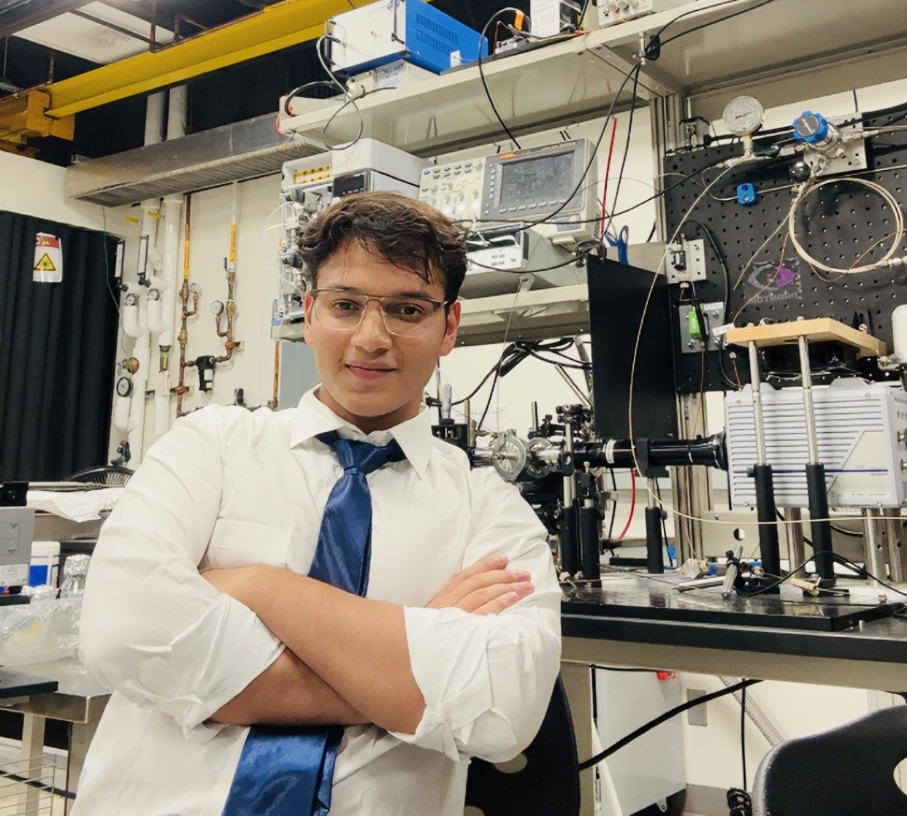

Scientific Computing
Python pipelines for XFEL detector data, microjet imaging, and calibration workflows.
I'm Divyanshu Tandon — a Computer Science student at Arizona State University building research software for X-ray free-electron laser experiments, security tooling for AI agents, and full-stack systems that hold up under real use. My code lives close to the problem: detector frames, h5 files, agent traces, and the strange failure modes that only show up when hardware and software meet.

Tools & Technologies I Work With
About Me
Most software engineers never have to think about whether a stream of liquid, thinner than a human hair, is stable enough to survive an X-ray beam. I do. As an undergraduate researcher with CXFEL and ASU Biodesign, and a summer researcher at SLAC's LCLS beamline, I build Python tools with NumPy, h5py, and PyQt/PySide that help researchers inspect detector data, process high-speed imagery, and quantify microjet behavior — velocity, diameter, breakup, and stability.
Outside the lab, I build for a different kind of reliability problem. I engineered a security gateway that blocks unauthorized tool access and detects hidden malicious instructions for AI agents, and an agent that queries a live data catalog before generating code so it never hallucinates a column name. I like problems where the interface has to stay usable, the computation has to be correct, and the system has to earn trust from people doing difficult work.
Python pipelines for XFEL detector data, microjet imaging, and calibration workflows.
A security gateway for AI agents and a metadata-aware code generation agent built on MCP.
React/TypeScript front ends and FastAPI/Python services shipped end to end.
Selected Work
A mix of research software, security tooling, and full-stack apps — all built end to end.
Open-source Python framework for processing, visualizing, and analyzing X-ray diffraction detector data from XFEL experiments.
A security gateway for AI agents that automatically blocks unauthorized tool access and detects hidden malicious instructions in real time.
An agent on Anthropic's Claude Agent SDK that queries a live DataHub catalog over MCP for real schema and lineage before generating dbt models, Airflow DAGs, and SQL migrations.
A published Devvit app giving moderators native tools to preview, lock, and remove risky comment threads during raids, brigading, and spam bursts.
Where I've Worked
BDI Biodesign — Center for Applied Structural Discovery, ASU
CXFEL — Compact X-ray Free Electron Laser, ASU
SLAC National Accelerator Laboratory, Menlo Park, CA
MaRTy Fieldwork and Urban Data Collection, ASU
Education
Arizona State University — Expected May 2027
Dean's ListRelevant Coursework
Writings
Synchronized droplet nozzle for in-vacuum X-ray scattering experiments
This paper introduces a droplet-on-demand injection system that synchronizes sample delivery with X-ray pulses at free-electron laser facilities. By firing individual droplets timed to the beam, the system reduces wasted sample, lowers background scattering, and enables single-particle imaging and SAXS of biological macromolecules in vacuum.
Ansari, A. et al. (incl. Divyanshu Tandon). Lab on a Chip, Advance Article, 2025. DOI: 10.1039/D5LC00063G
Read Paper →Also presented two first-author research posters on GDVN nozzle design and characterization for XFEL sample delivery at the ASU Biodesign Institute.


Python, Java, C, C++, JavaScript, TypeScript, MySQL, HTML, CSS
React, FastAPI, REST APIs, PyQt/PySide
NumPy, pandas, h5py, image processing, detector visualization, cross-correlation analysis
Linux, Bash/Shell Scripting, Git, GitHub, GitLab, CLI workflows
Open to software engineering internships, research software roles, and collaborations around scientific computing, data workflows, and full-stack tools.